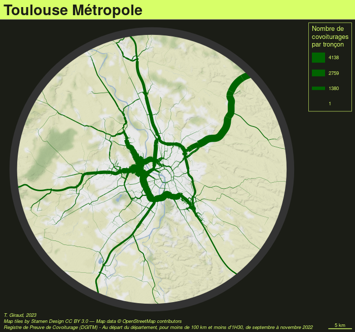

dir.create("data-raw")
cov_2022_11 <- "https://www.data.gouv.fr/fr/datasets/r/5d469743-9636-4e84-841c-2ae1111b4009"
cov_2022_10 <- "https://www.data.gouv.fr/fr/datasets/r/80b38046-8166-49fd-bbee-fc0ba9612a88"
cov_2022_09 <- "https://www.data.gouv.fr/fr/datasets/r/513862ee-8e8e-426b-9b67-7a4e39ab253a"
download.file(cov_2022_11, destfile = "data-raw/cov_2022_11.csv")
download.file(cov_2022_10, destfile = "data-raw/cov_2022_10.csv")
download.file(cov_2022_09, destfile = "data-raw/cov_2022_09.csv")Faire des cartes avec le logiciel libre R
Journée d’étude - La boîte à outils de cartographie et de géovisualisation de données : regards croisés de chercheurs
Timothée Giraud ![]()
1 Présentation de l’outil et de son environnement
1.1 R et RStudio
1.2 L’Écosystème spatial de R
2 Exemple d’analyse
Nous voulons étudier les déplacements effectué en covoiturage. Nous nous concentrerons sur les durées, distances et vitesses de ces déplacements.
2.1 Préparation des données
2.1.1 Téléchargement des données
Nous téléchargeons les données pour les mois de septembre, octobre et novembre 2022.
2.1.2 Import des données
Une fois les données téléchargées nous pouvons les importer dans R.
cov_raw_1 <- read.csv(file = "data-raw/cov_2022_09.csv", sep = ";")
cov_raw_2 <- read.csv(file = "data-raw/cov_2022_10.csv", sep = ";")
cov_raw_3 <- read.csv(file = "data-raw/cov_2022_11.csv", sep = ";")
cov_raw <- rbind(cov_raw_1, cov_raw_2, cov_raw_3)2.1.3 Découverte du jeu de données
Nous pouvons étudier la structure et quelques statistiques très basiques sur le jeu de données.
# structure du jeu de données
str(cov_raw)'data.frame': 1789222 obs. of 27 variables:
$ journey_id : int 8481314 8539389 8481290 8481291 8481285 8497884 8481249 8481319 8485451 8481238 ...
$ trip_id : chr "c63637d5-e8d4-4772-a350-9682191f73ef" "9bbc99b5-ebf4-4cf5-b669-854b8187a35c" "e4525811-0fae-49a5-be8b-1e5dbe7906ab" "e4525811-0fae-49a5-be8b-1e5dbe7906ab" ...
$ journey_start_datetime : chr "2022-09-01T00:00:00+02:00" "2022-09-01T00:00:00+02:00" "2022-09-01T00:00:00+02:00" "2022-09-01T00:00:00+02:00" ...
$ journey_start_date : chr "2022-09-01" "2022-09-01" "2022-09-01" "2022-09-01" ...
$ journey_start_time : chr "00:00:00" "00:00:00" "00:00:00" "00:00:00" ...
$ journey_start_lon : num 1.07 2.77 3.14 3.14 2.38 ...
$ journey_start_lat : num 49.4 48.9 48.9 48.9 48.8 ...
$ journey_start_insee : int 76540 77111 77183 77183 75056 75056 34154 76540 34344 49007 ...
$ journey_start_department: int 76 77 77 77 75 75 34 76 34 49 ...
$ journey_start_town : chr "Rouen" "Chessy" "La Ferté-sous-Jouarre" "La Ferté-sous-Jouarre" ...
$ journey_start_towngroup : chr "Métropole Rouen Normandie" "CA Val d'Europe Agglomération" "CA Coulommiers Pays de Brie" "CA Coulommiers Pays de Brie" ...
$ journey_start_country : chr "France" "France" "France" "France" ...
$ journey_end_datetime : chr "2022-09-01T00:40:00+02:00" "2022-09-01T00:10:00+02:00" "2022-09-01T00:50:00+02:00" "2022-09-01T00:50:00+02:00" ...
$ journey_end_date : chr "2022-09-01" "2022-09-01" "2022-09-01" "2022-09-01" ...
$ journey_end_time : chr "00:40:00" "00:10:00" "00:50:00" "00:50:00" ...
$ journey_end_lon : num 0.966 2.667 2.674 2.674 1.963 ...
$ journey_end_lat : num 49.3 48.9 48.9 48.9 48.8 ...
$ journey_end_insee : int 27638 77438 77517 77517 78208 91345 34090 27638 34172 49007 ...
$ journey_end_department : int 27 77 77 77 78 91 34 27 34 49 ...
$ journey_end_town : chr "Le Thuit de l'Oison" "Saint-Thibault-des-Vignes" "Villevaudé" "Villevaudé" ...
$ journey_end_towngroup : chr "CC Roumois Seine" "CA Marne et Gondoire" "CC Plaines et Monts de France" "CC Plaines et Monts de France" ...
$ journey_end_country : chr "France" "France" "France" "France" ...
$ passenger_seats : int 1 1 1 1 1 1 1 1 1 1 ...
$ operator_class : chr "C" "C" "C" "C" ...
$ journey_distance : int 25476 10780 49803 49803 39093 19941 8144 28086 29696 2525 ...
$ journey_duration : int 40 12 47 47 47 33 18 41 51 10 ...
$ has_incentive : chr "OUI" "OUI" "OUI" "OUI" ...# statistiques basiques
summary(cov_raw) journey_id trip_id journey_start_datetime
Min. : 8481238 Length:1789222 Length:1789222
1st Qu.: 8988565 Class :character Class :character
Median : 9740834 Mode :character Mode :character
Mean : 9672942
3rd Qu.:10322829
Max. :10854769
journey_start_date journey_start_time journey_start_lon journey_start_lat
Length:1789222 Length:1789222 Min. :-61.723 Min. :-21.38
Class :character Class :character 1st Qu.: 1.068 1st Qu.: 46.52
Mode :character Mode :character Median : 2.270 Median : 48.65
Mean : 2.854 Mean : 46.87
3rd Qu.: 3.510 3rd Qu.: 48.96
Max. : 55.825 Max. : 51.95
journey_start_insee journey_start_department journey_start_town
Min. : 1004 Min. : 1.00 Length:1789222
1st Qu.:44109 1st Qu.: 44.00 Class :character
Median :76020 Median : 75.00 Mode :character
Mean :64655 Mean : 74.17
3rd Qu.:88327 3rd Qu.: 85.00
Max. :99140 Max. :974.00
NA's :41702
journey_start_towngroup journey_start_country journey_end_datetime
Length:1789222 Length:1789222 Length:1789222
Class :character Class :character Class :character
Mode :character Mode :character Mode :character
journey_end_date journey_end_time journey_end_lon journey_end_lat
Length:1789222 Length:1789222 Min. :-61.567 Min. :-21.39
Class :character Class :character 1st Qu.: 1.069 1st Qu.: 46.53
Mode :character Mode :character Median : 2.269 Median : 48.65
Mean : 2.854 Mean : 46.87
3rd Qu.: 3.510 3rd Qu.: 48.96
Max. : 55.826 Max. : 51.99
journey_end_insee journey_end_department journey_end_town
Min. : 1004 Min. : 1.00 Length:1789222
1st Qu.:44109 1st Qu.: 44.00 Class :character
Median :76057 Median : 75.00 Mode :character
Mean :64794 Mean : 74.27
3rd Qu.:89206 3rd Qu.: 85.00
Max. :99140 Max. :974.00
NA's :44592
journey_end_towngroup journey_end_country passenger_seats operator_class
Length:1789222 Length:1789222 Min. :1 Length:1789222
Class :character Class :character 1st Qu.:1 Class :character
Mode :character Mode :character Median :1 Mode :character
Mean :1
3rd Qu.:1
Max. :4
journey_distance journey_duration has_incentive
Min. : 0 Min. : 0.00 Length:1789222
1st Qu.: 10066 1st Qu.: 17.00 Class :character
Median : 20245 Median : 26.00 Mode :character
Mean : 24848 Mean : 29.44
3rd Qu.: 33140 3rd Qu.: 38.00
Max. :1038359 Max. :716.00
Intéressons nous plus particulièrement aux distances et durées des trajets.
summary(cov_raw$journey_distance) Min. 1st Qu. Median Mean 3rd Qu. Max.
0 10066 20245 24848 33140 1038359 summary(cov_raw$journey_duration) Min. 1st Qu. Median Mean 3rd Qu. Max.
0.00 17.00 26.00 29.44 38.00 716.00 Les valeurs minimums de ces variables sont à 0, ce n’est pas très réaliste.
2.1.4 Nettoyage
Suppression des trajets inférieurs à 2 minutes ou inférieurs à 1 kilomètres.
cov <- cov_raw[cov_raw$journey_distance >= 1000 &
cov_raw$journey_duration >= 2, ]2.2 Analyse globale
2.2.1 Calcul des indicateurs, gestion des unités de mesure
Le package units (Pebesma et al., 2016) permet de convertir facilement les unités de mesure.
duree <- cov$journey_duration
distance <- cov$journey_distance
library(units)udunits database from /usr/share/xml/udunits/udunits2.xmlunits(distance) <- "m"
units(duree) <- "min"
distance <- set_units(distance, "km")
duree <- set_units(duree, "h")
vitesse <- distance / duree2.2.2 Représentations
Nous pouvons calculer quelques statistiques sur nos indicateurs.
summary_table <- data.frame(
rbind(summary(duree),
summary(distance),
summary(vitesse)),
row.names = c("Durée (h)", "Distance (km)", "Vitesse (km/h)"),
check.names = FALSE
)
knitr::kable(summary_table, digits = 1)| Min. | 1st Qu. | Median | Mean | 3rd Qu. | Max. | |
|---|---|---|---|---|---|---|
| Durée (h) | 0.0 | 0.3 | 0.4 | 0.5 | 0.6 | 11.9 |
| Distance (km) | 1.2 | 10.1 | 20.2 | 24.9 | 33.1 | 1038.4 |
| Vitesse (km/h) | 0.1 | 33.2 | 44.5 | 46.6 | 58.2 | 184.4 |
Nous pouvons aussi créer rapidement des histogrammes des distributions.
hist(duree)
hist(distance)
hist(vitesse)
Et finalement nous pouvons croiser les variables deux à deux avec des nuages de points.
plot(x = distance, y = duree,
main = "Rapport entre durée et distance des trajets",
pch = 21, cex = .4, col = "white", bg = "darkred")
plot(x = distance, y = vitesse,
main = "Rapport entre vitesse et distance des trajets",
pch = 21, cex = .4, col = "white", bg = "darkblue")
abline(h = 80, lty = 2, lwd = .5)
abline(h = 110, lty = 2, lwd = .5)2.3 Zoom sur la Haute-Garonne
2.3.1 Sélection des données
Nous sélectionnons les trajets depuis la Haute-Garonne (31) de moins de 100 km et de moins d’1h30.
dep <- 31
covdep <- cov[cov$journey_start_department %in% dep &
cov$journey_distance <= 100000 &
cov$journey_duration <= 150, ]Notez qu’il suffit de modifier
dep <- 31pour obtenir l’analyse sur un autre département.
2.3.2 Calcul des indicateurs, gestion des unités de mesure
duree <- covdep$journey_duration
distance <- covdep$journey_distance
library(units)
units(distance) <- "m"
units(duree) <- "min"
distance <- set_units(distance, "km")
vitesse <- distance / duree
vitesse <- set_units(vitesse, "km/h")2.3.3 Représentations
summary_table <- data.frame(
rbind(summary(duree),
summary(distance),
summary(vitesse)),
row.names = c("Durée (m)", "Distance (km)", "Vitesse (km/h)"),
check.names = FALSE
)
knitr::kable(summary_table, digits = 1)| Min. | 1st Qu. | Median | Mean | 3rd Qu. | Max. | |
|---|---|---|---|---|---|---|
| Durée (m) | 3.0 | 16.0 | 22.0 | 24.3 | 30.0 | 86.0 |
| Distance (km) | 1.8 | 9.8 | 15.8 | 22.3 | 27.2 | 95.3 |
| Vitesse (km/h) | 13.4 | 34.1 | 44.6 | 49.8 | 62.5 | 110.8 |
hist(duree, breaks = seq(0,max(as.numeric(duree))+1,1))
hist(distance, breaks = seq(0,100,1))
hist(vitesse, breaks = seq(0,max(as.numeric(vitesse)+1),1))

plot(x = distance, y = duree,
main = "Rapport entre durée et distance des trajets",
pch = 21, cex = .4, col = "white", bg = "darkred") 
plot(x = distance, y = vitesse,
main = "Rapport entre vitesse et distance des trajets",
pch = 21, cex = .4, col = "white", bg = "darkblue")
2.3.4 Récupération de trajets théoriques
Nous utilisons le package osrm (Giraud, 2022c) pour récupérer les trajets par le plus court chemin entre les points de départs et d’arrivées. Ces trajets sont calculés par le logiciel OSRM (Open Source Routing Machine) (Luxen et Vetter, 2011) qui se base sur les données d’OpenStreetMap. Le package osrm sert d’interface entre R et OSRM.
La fonction ci-dessous est utile pour demander une grande quantité de routes en utilisant les fonctionnalités de parallélisation de R. Pour l’utiliser il est nécessaire d’avoir accès à un serveur OSRM.
Fonction d’extraction des routes en masse
get_routes <- function(x,
srcX = "srcx", srcY = "srcy",
dstX = "dstx", dstY = "dsty",
ncl = 5){
ny <- nrow(x)
sequence <- unique(c(seq(1, ny, 500), ny + 1))
lseq <- length(sequence) - 1
ml <- list()
for (i in 1:lseq) {
ml[[i]] <- x[(sequence[i]):(sequence[i + 1] - 1),
c(srcX, srcY, dstX, dstY)]
}
cl <- parallel::makeCluster(ncl)
doParallel::registerDoParallel(cl,)
roads <- foreach::`%dopar%`(
foreach::foreach(
ml = ml,
.packages = c("osrm", "sf"),
.combine = rbind,
.inorder = FALSE
),
{
l <- vector("list", nrow(ml))
for( i in seq_along(l)){
l[[i]] <- osrmRoute(src = ml[i, c(srcX, srcY)],
dst = ml[i, c(dstX, dstY)],
osrm.server = "http://0.0.0.0:5000/",
osrm.profile = "car",
overview = "full")
}
l <- do.call(rbind, l)
l
}
)
parallel::stopCluster(cl)
roads
}Nous pouvons maintenant extraire les routes avec la fonction get_routes().
roads <- get_routes(x = covdep,
srcX = "journey_start_lon",
srcY = "journey_start_lat",
dstX = "journey_end_lon",
dstY = "journey_end_lat",
ncl = 7)Affichons 3 trajets au hasard. Pour les visualiser nous utilisons le package sf (Pebesma, 2018).
library(sf)
plot(st_geometry(roads[5:7,]))Cette opération d’extraction étant assez lourde nous pouvons sauvegarder son résultat pour une utilisation ultérieure.
library(sf)
st_write(obj = roads,
dsn = "data/road.gpkg",
layer = paste0("road_",dep),
append = FALSE)2.3.5 (Import des trajets pré-enregistrés)
library(sf)
roads <- st_read(dsn = "data/road.gpkg", layer = paste0("road_",dep))2.3.6 Comparaison des trajets réels et théoriques
Nous pouvons maintenant comparer les distances et les durées réeeles et théoriques.
units(roads$duration) <- "min"
units(roads$distance) <- "km"
duree_osrm <- round(roads$duration,2)
distance_osrm <- roads$distance
plot(duree, duree_osrm, asp = 1,
pch = 21, cex = .5, col = "white",
bg = "darkred",
xlim = c(0,100), ylim = c(0,100),
main = "Rapport entre durées réelles et théoriques")
abline(a = 0, b = 1)
plot(distance, distance_osrm, asp = 1,
pch = 21, cex = .5, col = "white",
bg = "darkblue", xlim = c(0,100),
ylim = c(0,100),
main = "Rapport entre distances réelles et théoriques")
abline(a = 0, b = 1)2.3.7 Cartographie 1
Sur une première carte nous montrerons les tronçons de routes empruntés par les usagers du covoiturage dans la zone où a lieu le plus grand nombre de départs dans le département.
2.3.7.1 Trouver la zone ou a lieu le plus grand nombre de départs
Création d’une couche de points des lieux de départs :
covdep_start <- st_as_sf(covdep,
coords = c('journey_start_lon', 'journey_start_lat'),
crs = "EPSG:4326", remove = FALSE)
# reprojection en webmercator
covdep_start <- st_transform(covdep_start, "EPSG:3857")Towngroup où ont lieux le plus de départs :
# Aggrégation des départ par towngroup
# et sélection du towngroup ayant le plus de départs
city <- tapply(X = covdep$trip_id,
INDEX = covdep$journey_start_towngroup,
FUN = length) |>
sort(decreasing = TRUE)|>
names()|>
head(1)
city[1] "Toulouse Métropole"Création d’une zone de 30 km autour du centroide des départs de la zone :
zone <- covdep_start |>
subset(journey_start_towngroup %in% city) |>
st_geometry() |>
st_union() |>
st_centroid() |>
st_buffer(30000) |>
st_sf()2.3.7.2 Télécharger des tuiles raster pour le fond de carte
Téléchargement de tuiles raster (Terrain Background de chez Stamen) sur la zone. Nous utilisons le package maptiles (Giraud, 2022b) pour cela :
library(maptiles)
osm <- get_tiles(zone,
provider = "Stamen.TerrainBackground",
zoom = 11,
cachedir = "tiles", verbose = TRUE)Zoom:11
Data and map tiles sources:
Map tiles by Stamen Design CC BY 3.0 — Map data © OpenStreetMap contributorsplot_tiles(osm)Nous pouvons ensuite découper les tuiles en fonction de la zone définie précédement. Pour cela nous utilisons le package terra (Hijmans, 2022) :
library(terra)terra 1.6.47osm_r <- osm |>
mask(zone) |>
crop(zone)Nous pouvons ensuite visualiser les tuiles et la zone grace au package mapsf (Giraud, 2022a).
library(mapsf)
# définition d'un thème
theme <- mf_theme("green",
mar = c(0,0,2,0),
line = 2,
cex = 1.8,
inner = FALSE,
pos = "left")
mf_init(zone)
mf_raster(osm_r, add = TRUE)
mf_map(zone, col = NA, lwd = 15, add = TRUE)2.3.7.3 Agrégation des tronçons
Nous devons maintenant agréger les tronçons de route se superposant et compter le nombre de superposition par tronçons. Pour cela nous utilisons le package stplanr (Robin Lovelace et Richard Ellison, 2018). Cette opéaration est assez lourde, nous enregristrons son résultat pour une utilisation ultérieure :
# reprojection en webmercator
roads <- st_transform(roads, "EPSG:3857")
# découage des route à la limite de la zone
roads <- st_intersection(roads, st_geometry(zone))
# keep only linestrings
roads <- st_collection_extract(roads, "LINESTRING")
# Agrégation des tronçons
library(stplanr)
roads$n <- 1
roads_n <- overline(sl = roads, attrib = "n", ncores = 8)
# Sauvegarder le résultat
st_write(obj = roads_n,
dsn = "data/road.gpkg",
layer = paste0("road_",dep,"_ag"),
append = FALSE)(Import des tronçons agrégés)
roads_n <- st_read(dsn = "data/road.gpkg",
layer = paste0("road_",dep, "_ag"),
quiet = TRUE)2.3.7.4 Création de la carte
# Valeur max
maxv <- max(roads_n$n)
# Credits de la carte
credits <- paste0("T. Giraud, 2023\n",
get_credit("Stamen.TerrainBackground"), '\n',
"Registre de Preuve de Covoiturage (DGITM) - ",
"Au départ du département, pour moins de 100 km et ",
"moins d'1H30, ",
"de septembre à novembre 2022")
mf_export(zone, filename = paste0("map", dep, ".png"),
width = 700, expandBB = c(.05,0,0,0.2),
theme = theme)
mf_raster(osm_r, add = T)
mf_map(x = roads_n, var = 'n', type = 'prop',
val_max = maxv, col = "darkgreen",
leg_pos = "topright",
leg_title = "Nombre de\ncovoiturages\npar tronçon",
leg_frame = TRUE,
)
mf_title(city)
mf_credits(credits, bg = mf_theme()$bg)
mf_map(x = zone, col = NA, lwd = 15, add = TRUE)
mf_scale(5)
dev.off()
2.3.8 Cartographie 2
Sur une deuxième carte nous allons représenté la densité des points de départs en utilisant la méthode KDE.
2.3.8.1 Calcul du KDE
Pour cela nous utilisons le package spatstat (Baddeley et Turner, 2005) :
library("spatstat", quietly = TRUE)spatstat.geom 3.0-3
Attaching package: 'spatstat.geom'The following objects are masked from 'package:terra':
area, delaunay, rescale, rotate, shift, where.max, where.minspatstat.random 3.0-1spatstat.explore 3.0-5spatstat.model 3.0-2spatstat.linnet 3.0-3
spatstat 3.0-2
For an introduction to spatstat, type 'beginner' # transformation des points sf en points spatstat
p <- as.ppp(st_coordinates(covdep_start), W = as.owin(zone))Warning: 1751 points were rejected as lying outside the specified windowWarning: data contain duplicated points# calcul du KDE
ds <- density.ppp(p, sigma = 1000, eps = c(100, 100), positive = TRUE)
rasdens <- rast(ds) * 1000 * 1000
crs(rasdens) <- 'EPSG:3857'
plot(rasdens)2.3.8.2 Cartographie
Nous utlisons le package tanaka (Giraud, 2022d) pour représenter le KDE avec un effet pseudo 3D :
# calcul des bornes des classes
v <- values(rasdens)
bks <- mf_get_breaks(v[v>5], nbreaks = 8, breaks = "geom")
bks <- unique(c(0,bks))
# création d'une palette de couleurs
cols <- hcl.colors(n = length(bks)-1, "Inferno", rev=F)
# crédits
credits <- paste0("T. Giraud, 2023\n",
"Registre de Preuve de Covoiturage (DGITM)\n",
"Au départ du département, pour moins de 100 km et ",
"moins d'1H30, ",
"de septembre à novembre 2022")
library(tanaka)
mf_export(zone, filename = paste0("map", dep, "dens.png"),
width = 700, expandBB = c(.05,0,0,0.2),
theme = theme)
tanaka(rasdens, breaks = bks, col = cols,
legend.pos = "n", mask = zone,
add = TRUE)
mf_legend(type = "choro", pos = "topright",
val = bks,pal = cols,
title = paste0("Densité de départs\n",
"KDE, sigma=1km\n",
"(départs par km2)"),
val_rnd = 0)
mf_map(roads_n, 'n', 'prop', col = "#ffffff50",
leg_title = "Nombre de\ncovoiturages\npar tronçon",
val_max = maxv, leg_pos = "right")
mf_title(city)
mf_credits(credits, bg = mf_theme()$bg)
mf_map(x = zone, col = NA, lwd = 15, add = T)
mf_scale(5)
dev.off()
2.4 Autres villes
2.5 Pour la reproductibilité
sessionInfo()R version 4.2.2 (2022-10-31)
Platform: x86_64-pc-linux-gnu (64-bit)
Running under: Debian GNU/Linux 11 (bullseye)
Matrix products: default
BLAS: /usr/lib/x86_64-linux-gnu/blas/libblas.so.3.9.0
LAPACK: /usr/lib/x86_64-linux-gnu/lapack/liblapack.so.3.9.0
locale:
[1] LC_CTYPE=fr_FR.UTF-8 LC_NUMERIC=C
[3] LC_TIME=fr_FR.UTF-8 LC_COLLATE=fr_FR.UTF-8
[5] LC_MONETARY=fr_FR.UTF-8 LC_MESSAGES=fr_FR.UTF-8
[7] LC_PAPER=fr_FR.UTF-8 LC_NAME=C
[9] LC_ADDRESS=C LC_TELEPHONE=C
[11] LC_MEASUREMENT=fr_FR.UTF-8 LC_IDENTIFICATION=C
attached base packages:
[1] stats graphics grDevices utils datasets methods base
other attached packages:
[1] tanaka_0.3.0 spatstat_3.0-2 spatstat.linnet_3.0-3
[4] spatstat.model_3.0-2 rpart_4.1.19 spatstat.explore_3.0-5
[7] nlme_3.1-160 spatstat.random_3.0-1 spatstat.geom_3.0-3
[10] spatstat.data_3.0-0 mapsf_0.6.1 terra_1.6-47
[13] maptiles_0.4.0 sf_1.0-9 units_0.8-1
loaded via a namespace (and not attached):
[1] Rcpp_1.0.9 lattice_0.20-45 deldir_1.0-6
[4] png_0.1-8 class_7.3-20 assertthat_0.2.1
[7] digest_0.6.31 utf8_1.2.2 R6_2.5.1
[10] evaluate_0.19 e1071_1.7-12 tensor_1.5
[13] highr_0.10 pillar_1.8.1 mapiso_0.2.0
[16] rlang_1.0.6 rstudioapi_0.14 Matrix_1.5-3
[19] goftest_1.2-3 rmarkdown_2.19 splines_4.2.2
[22] stringr_1.5.0 htmlwidgets_1.6.0 polyclip_1.10-4
[25] proxy_0.4-27 compiler_4.2.2 xfun_0.36
[28] pkgconfig_2.0.3 mgcv_1.8-41 htmltools_0.5.4
[31] tidyselect_1.2.0 tibble_3.1.8 codetools_0.2-18
[34] fansi_1.0.3 dplyr_1.0.10 grid_4.2.2
[37] jsonlite_1.8.4 lifecycle_1.0.3 DBI_1.1.3
[40] magrittr_2.0.3 KernSmooth_2.23-20 cli_3.5.0
[43] stringi_1.7.8 spatstat.utils_3.0-1 generics_0.1.3
[46] vctrs_0.5.1 tools_4.2.2 glue_1.6.2
[49] purrr_1.0.0 abind_1.4-5 fastmap_1.1.0
[52] slippymath_0.3.1 yaml_2.3.6 spatstat.sparse_3.0-0
[55] isoband_0.2.7 classInt_0.4-8 knitr_1.41 Les références
Baddeley, A. et Turner, R. (2005). spatstat: An R Package for Analyzing Spatial Point Patterns. Journal of Statistical Software, 12(6), 1‑42. https://doi.org/10.18637/jss.v012.i06
Giraud, T. (2022a). mapsf: Thematic Cartography. https://CRAN.R-project.org/package=mapsf
Giraud, T. (2022b). maptiles: Download and Display Map Tiles. https://CRAN.R-project.org/package=maptiles
Giraud, T. (2022c). osrm: Interface Between R and the OpenStreetMap-Based Routing Service OSRM. Journal of Open Source Software, 7(78), 4574. https://doi.org/10.21105/joss.04574
Giraud, T. (2022d). tanaka: Design Shaded Contour Lines (or Tanaka) Maps. https://CRAN.R-project.org/package=tanaka
Hijmans, R. J. (2022). terra: Spatial Data Analysis. https://CRAN.R-project.org/package=terra
Luxen, D. et Vetter, C. (2011). Real-time routing with OpenStreetMap data. New York, NY, USA (p. 513‑516). https://doi.org/10.1145/2093973.2094062
Pebesma, E. (2018). Simple Features for R: Standardized Support for Spatial Vector Data. The R Journal, 10(1), 439‑446. https://doi.org/10.32614/RJ-2018-009
Pebesma, E., Mailund, T. et Hiebert, J. (2016). Measurement Units in R. R Journal, 8(2), 486‑494. https://doi.org/10.32614/RJ-2016-061
Robin Lovelace et Richard Ellison. (2018). stplanr: A Package for Transport Planning. The R Journal, 10(2). https://doi.org/10.32614/RJ-2018-053